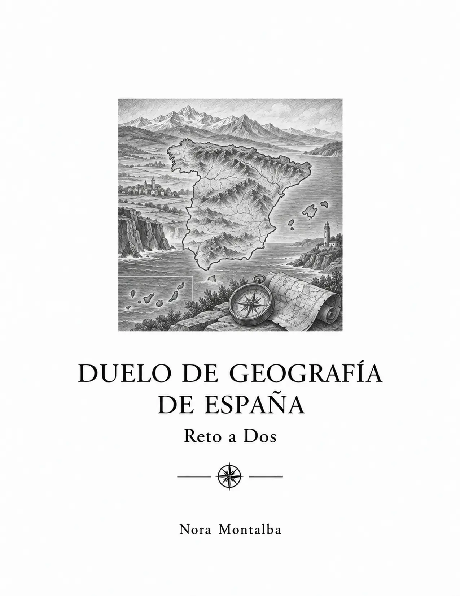
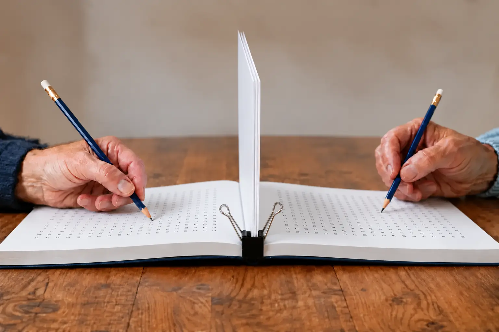

Duelo de Geografía de España
Provincias, ríos, montañas, costas y paisajes
Ríos, sierras, costas y lugares de España para poner a prueba la memoria geográfica.
Dentro del libro
La partida empieza con las palabras.
Cuarenta sopas de letras para conocer mejor la geografía española. Comunidades autónomas, provincias, ríos, sierras, costas y otros elementos del territorio se convierten en retos para jugar cara a cara.
Ideal para familias, colegios, viajes, centros de día, residencias y personas curiosas por la geografía de España.
- Relieve, ríos y montañas
- Comunidades y provincias
- Costas y paisajes españoles

Así funciona
Abre. Separa.
Y empieza el duelo.

- 01
Colocad el libro
Se abre de lado sobre la mesa, justo entre los dos jugadores.
- 02
Formad la barrera
Separad y levantad tres hojas juntas. Sujetadlas con una pinza grande o con una mano para mantener la barrera recta.
- 03
Elegid cómo jugar
Podéis buscar las diez palabras ocultas sin saber cuáles son, o consultar las hojas de soluciones al final del libro, copiar esas palabras en los espacios laterales de cada tablero y después buscarlas con la lista a la vista.
- 04
Jugad a la vez
Cada persona ve su propio tablero. Gana quien completa antes el reto.

¿Preparados para jugar a Duelo de Geografía de España?
 Duelo de Ciencia e Inventos
Duelo de Ciencia e Inventos